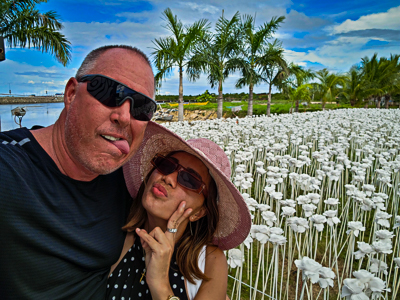

J. Darren Lofthouse

Summary
Cloud and Virtualization professional with experience designing,
implementing, and supporting infrastructure services for many business
applications serving a wide array of needs. High level of troubleshooting expertise
and critical thinking with the ability to resolve complex issues in a quick and concise
manner.
Education
A.A.S Computer Information Systems, SLCC, SLC, Utah, 1991
B.S. Technical Management, DeVry University, Orlando, Florida, 2006
Experience
DISH Technologies | Remote | AWS Cloud Engineer | Jan 2020 – Aug 2023
- Design, implement, and support AWS Cloud Architecture as code using tools such as Terraform, CloudFormation, and AWSCLI.
- Manage DevOps CI/CD pipelines using GitLab, Jenkins, and ArgoCD.
- Provide support to application and production support teams when troubleshooting issues related to the previously provisioned AWS architecture.
- Document processes and train members of the Dev team to help them learn about AWS resources and proper design and deployment of services using the developed pipelines.
Ciber Global (Disney) | Orlando, FL | Cloud Engineer | Aug 2017 – Dec 2019
- Work with application developers to design AWS and on-premise infrastructure to support a wide array of business applications.
- Provision AWS services using Terraform, AWSCLI, Atlantis, and Github.
- Provision Akamai properties to support external access to public applications.
- Work with application teams to troubleshoot application issues.
- Manage access roles and policies across many AWS accounts using terraform.
- Developed processes to maintain standards and security in accessing the AWS cloud resources across many different accounts.
HCL America (Disney) | Orlando, FL | VMware Team Lead | Oct 2012 – Aug 2017
- Manage Team of VMware Systems Administrators providing them with technical guidance to maintain standards, supportability, and best practices.
- Travel to India to meet and train offshore team members to enable them to better fulfill their support responsibilities.
- Design, Build, and Support VMware ESXi 5.x and 6.x Hosts and associated Virtual Center and SSO/PSC appliances.
- Provide reports as required by upper level management, retrieving data through PowerShell and PowerCLI scripts for patching, storage consumption, and other configuration data.
- Provide support to Project Managers and Architects during planning, purchasing, and build phases of new Intel VMs procured for the Disney account.
- Create and manage standard processes governing cluster builds and migrations, host upgrades and patching, and VM resource increases/modifications and tools installs/upgrades.
- Work closely with Disney DTSS and product TAMs to develop roadmaps for new implementations and system designs to support the requests of application and development teams.
IBM Global (Disney) | Orlando, FL | VMware SysAdmin | July 2005 – Oct 2012
- Build, Maintain, and Support VMware ESX 3.X, 4.X, and 5.X Hosts and associated VMs.
- Build, Maintain, and Support Intel Servers including Windows 2000, Windows 2003, Windows 2008, Novell Netware, and Linux Operating Systems.
- Provide hardware support for Compaq DL and ML Class Servers and IBM x Series Servers.
- Provide support to Project Managers and Architects during planning, purchasing, and build phases of new Intel servers procured for the Disney account.
- Provide Dedicated SME support for Disney Theme Parks and Resorts acting as the escalation point for all issues related to Intel Servers on the Disney account TP&R BU.
The Disney Company | Orlando, FL | Intel SysAdmin Sr | Feb 1998 – July 2005
- Build and install Netware 4/5/6 and Windows 2000/2003 Servers.
- Provide operating system support for Netware 4/5/6 and Windows 2000/2003 Servers.
- Provide hardware support for Compaq DL and ML Class Servers.
- Configure Cisco switches for proper VLAN and line speeds for server installs.
- Administer Active Directory, Group and User Security, Cluster Resources, and DFS.
- Install and configure clusters where needed and test for proper failover.
Certifications
VCP6-DCV (VMware Certified Professional 6 - Data Center Virtualization)
VCP6-CMA (VMware Certified Professional 6 - Cloud Management & Automation)
CNE 4 (NetWare 4 Certified NetWare Engineer)
About Me
Contact Me